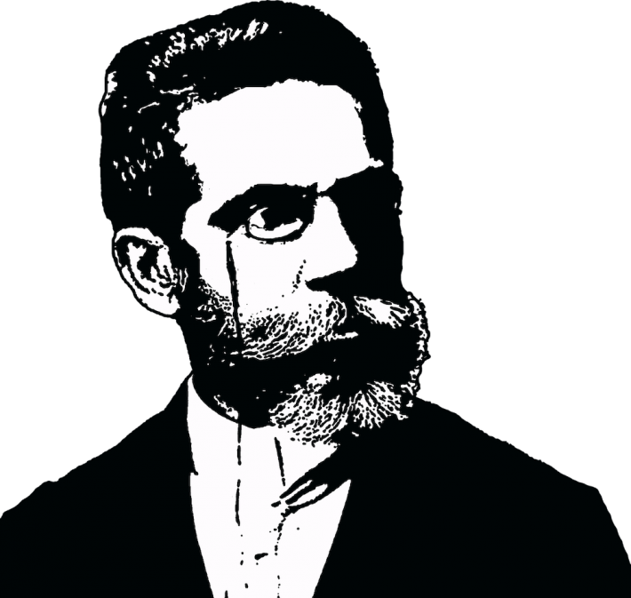
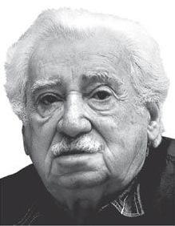
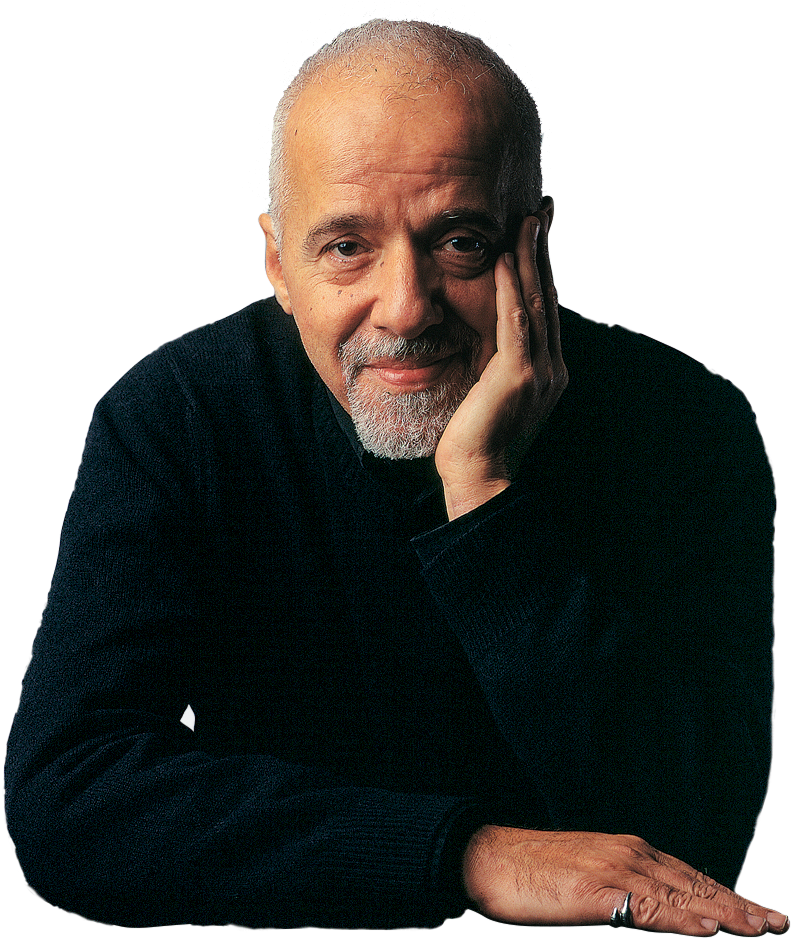
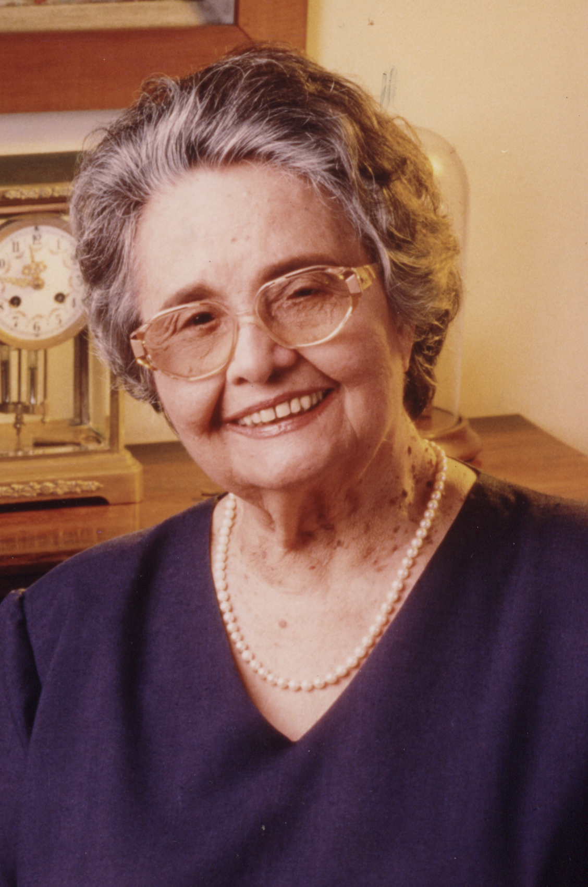
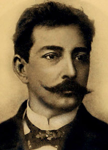
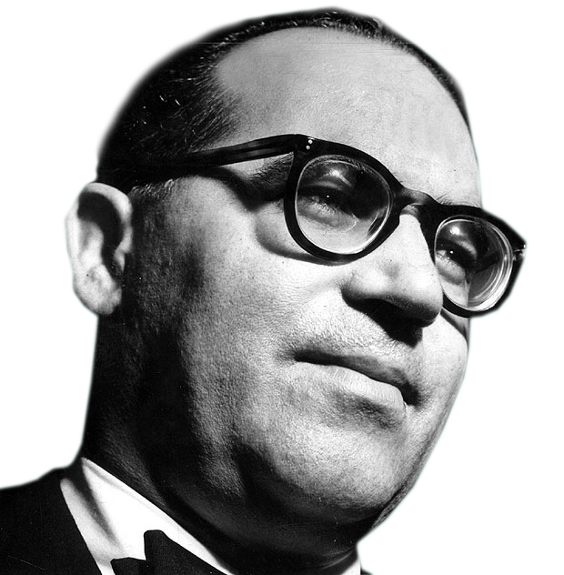

A Riqueza da Literatura Brasileira
A literatura brasileira é um tesouro único de vozes diversas, experiências multifacetadas e perspectivas que refletem a complexidade de nossa identidade nacional. Desde o período colonial até os dias contemporâneos, escritores brasileiros criaram obras que ecoam não apenas em nosso país, mas no cenário literário mundial. Nossa literatura é marcada pela mistura de influências indígenas, africanas, portuguesas e outras culturas que se entrelaçam formando uma narrativa genuinamente brasileira. Este artigo convida você a conhecer alguns dos autores mais importantes que moldaram, e continuam moldando, a história da literatura no Brasil.
Machado de Assis: O Mestre da Prosa

Joaquim Maria Machado de Assis (1839-1908) é amplamente considerado o maior nome da literatura brasileira. Nascido no Rio de Janeiro, Machado transcendeu as limitações sociais de sua época para criar obra que permanece absolutamente contemporânea. Seus romances—"Dom Casmurro," "Quincas Borba," "Memórias Póstumas de Brás Cubas"—exploram psicologia humana com ironia aguçada e perspicácia penetrante. Machado é mestre da narrativa não confiável; suas vozes narrativas frequentemente mentem, auto-enganam e revelam hipocrisia social através de confissões aparentemente inocentes. Sua prosa é densa, repleta de digressões, reflexões filosóficas e humor que exige leitura atenta. Machado antecipou técnicas modernistas décadas antes de elas se tornarem tendência, consolidando seu lugar como gênio literário que transcendeu seu tempo.
Carlos Drummond de Andrade: A Voz Poética Essencial
Carlos Drummond de Andrade (1902-1987) revolucionou a poesia brasileira através de linguagem coloquial, ironia e profundidade filosófica. Seu livro "Sentimento do Mundo" (1940) e "Claro Enigma" (1951) exploram contradições de existência humana com toques de humor e melancolia. Drummond recusou a eloquência declamatória de gerações anteriores, em vez disso criando verso que soa como conversa intimista mas contém profundidade metafísica. Poemas como "Sentimento do Mundo" e "A Máquina do Mundo" questionam significado, propósito e nossa relação com realidade. Drummond é poeta da ambiguidade, capaz de expressar simultânea rejeição e aceitação, desespero e esperança. Sua influência na poesia moderna brasileira é incalculável; praticamente todo poeta contemporâneo navega através do legado que Drummond estabeleceu.
Clarice Lispector: Exploradora da Consciência
Clarice Lispector (1920-1977), nascida na Ucrânia mas criada no Brasil desde infância, trouxe linguagem experimental e investigação psicológica profunda para a prosa brasileira. Seus romances—"A Paixão Segundo G.H.," "A Hora da Estrela," "Água Viva"—desafiam estrutura narrativa convencional, mergulhando em estados de consciência com intensidade hipnótica. Lispector escreve sobre alienação existencial, busca de significado e confronto entre consciência e realidade com lirismo perturbador. "A Hora da Estrela" retrata vida de mulher pobre, ignorada e invisível com compaixão simultaneamente brutal. "A Paixão Segundo G.H." é investigação quase mística sobre estar vivo, com narrativa que se desintegra em epifania. Lispector expandiu possibilidades de ficção brasileira, insistindo que interioridade psicológica merecia sofisticação estética completa. Sua influência cresce constantemente, particularmente entre leitores contemporâneos buscando ficção introspectiva e formal ousada.
Jorge Amado: O Romancista do Povo

Jorge Amado (1912-2001) é autor brasileiro mais amplamente lido globalmente, conhecido por narrativas que celebram povo brasileiro com calor, humor e profundo respeito. Seus romances—"Capitães da Areia," "Gabriela, Cravo e Canela," "Dona Flor e Seus Dois Maridos"—retratam vida na Bahia com cores vívidas, personagens memoráveis e enredo que prende. Amado escreve sobre trabalhadores, prostitutas, órfãos e marginalizados com dignidade e afeto; suas histórias honram experiência cotidiana das pessoas comuns. Apesar de crítica de que sua ficção é ocasionalmente superficial ou excessivamente romântica, Amado demonstrou que literatura popular e literatura séria não são categorias excludentes. Sua prosa é acessível, seus personagens são inesquecíveis, e sua celebração de cultura afro-brasileira abriu caminho para outras vozes antes marginalizadas. Amado provou que ficção brasileira podia encontrar audiência global enquanto permanecia radicalmente local, específica a seu lugar e povo.
Paulo Coelho: Filosofia e Parábola

Paulo Coelho (nascido 1947) é autor mais vendido da literatura brasileira internacionalmente, conhecido principalmente por "O Alquimista" (1988). Seu trabalho combina parábola, filosofia e busca espiritual em narrativas acessíveis que ressoam através culturas. "O Alquimista" retrata jornada de garoto em busca de tesouro que se revela metáfora para auto-descoberta e realização pessoal. Coelho escreve sobre destino, intuição e conexão espiritual de maneira que apela a leitores buscando significado além material. Apesar de crítica de que sua ficção é ocasionalmente simplista ou excessivamente inspiracional, ninguém pode negar impacto de Coelho em acessibilizar literatura brasileira para audiências globais massivas. Seus livros venderam centenas de milhões de cópias; "O Alquimista" provavelmente é obra brasileira mais lida no mundo. Coelho expandiu conversação sobre literatura brasileira longe de circuitos acadêmicos para atingir leitores buscando orientação espiritual e propósito existencial.
Raquel Queiroz: Voz Nordestina Pioneira

Raquel de Queiroz (1910-2003) foi primeira mulher a entrar para Academia Brasileira de Letras e romancista que trouxe voz autenticamente feminina para literatura brasileira. Seus romances—"O Quinze," "Dôra, Doralina," "As Três Marias"—exploram vida de mulheres nordestinas com realismo brutal e compaixão. "O Quinze" retrata seca devastadora do sertão através perspectiva de mulher enfrentando privação; "As Três Marias" narra amizade feminina profunda com sensibilidade e agudeza social. Queiroz recusou-se a conformar expectativas que circunscreviam papel de mulher na literatura; em vez disso, criou personagens femininas complexas, inteligentes e frequentemente insubordinadas. Sua linguagem combina naturalismo com lirismo; seus enredos examinam classe, gênero e poder com sofisticação. Queiroz expandiu canon literário brasileiro, insistindo que perspectiva feminina e experiência nordestina mereciam atenção e respeito literário completos.
Aluísio Azevedo: O Naturalista Revolucionário

Aluísio Azevedo (1857-1913) foi precursor do naturalismo brasileiro, trazendo rigor científico e observação social aguçada para ficção. Seu romance "O Cortiço" (1890) é retrato brutal de vida nas cortiços do Rio de Janeiro, onde personagens de classes populares e imigrantes navegam pobreza, crime, sexualidade e exploração. Azevedo não romantiza; em vez disso, observa com olho detalhista comportamento humano sob pressão econômica. "O Cortiço" aborda raça, classe e moralidade com franqueza que chocou contemporâneos. Sua prosa é densa, repleta de detalhes sensoriais que trazem Rio à vida em toda sordidez e vitalidade. Azevedo não é escritor fácil de ler, mas sua importância para desenvolvimento de ficção brasileira moderna é inegável. Ele provou que literatura brasileira podia examinar realidade social com rigor científico enquanto permanecia literariamente sofisticada.
Rosa, Grande Guarda: Guimarães Rosa e a Revolução Linguística

Guimarães Rosa (1908-1967) é considerado um dos maiores escritores da literatura brasileira, revolucionário que transformou linguagem portuguesa através invenção neologística e desfamiliarização. Seu livro "Grande Sertão: Veredas" (1956) é épico de sertanejo contando história de vida, busca, perda e transformação em linguagem que mescla português coloquial com construções inventadas e ritmo poético hipnótico. Rosa cria palavras, distorce sintaxe, e reinventa linguagem para expressar realidades psicológicas e espirituais que linguagem convencional não pode captar. "Primeiras Estórias" (1962) coleta contos que alcançam profundidade metafísica através registro de momentos cotidianos transformados por perspectiva narrativa. Rosa não apenas escreve ficção; ele reinventa ficção, insistindo que linguagem é matéria que pode ser moldada, reinventada e transformada. Sua influência na literatura brasileira contemporânea é profunda; praticamente todos escritores sérios que vieram depois navegam sua herança.
Autores Contemporâneos Continuando Tradição
Literatura brasileira continua evoluindo através vozes contemporâneas que honram legado de precursores enquanto inovam para seus tempos. Escritores como Lygia Bojunga exploram ficção infantil e juvenil com sofisticação; Rubem Fonseca examina violência urbana e corrupção moral; Chico Buarque combina narrativa com lirismo poético. Cada geração de escritores brasileiros encontra forma de honrar tradição enquanto expandir-a, garantindo que literatura brasileira permanece viva, relevante e em constante conversação com seu passado.
Por Que Ler Literatura Brasileira
Ler literatura brasileira é descobrir vozes que oferecem perspectivas únicas sobre experiência humana. Esses autores exploram questões universais—amor, morte, significado, poder—através lentes especificamente brasileiras, criando síntese universal/particular que enriquece qualquer leitor. Suas obras refletem complexidade de nossa identidade nacional: marcada por escravidão, colonialismo, migração, e síntese cultural; seus escritores navegam herança traumática enquanto celebram resiliência, criatividade e humanidade. Ler Machado, Drummond, Lispector, Amado, Rosa e outros é estar em conversação com pensadores profundos que moldaram como pensamos, sentimos e compreendemos mundo.
Conclusão: Seu Convite à Leitura
Literatura brasileira oferece riqueza impossível de explorar completamente em artigo único. Este é apenas introdução—convite para descobrir vozes que estarão com você, transformando perspectiva, oferecendo consolo, provocando pensamento. Comece com qualquer desses autores; deixe suas palavras o/a transportar através brasileiro interior seco, cidades pulsantes, consciências complexas e corações humanos. Descubra por que literatura brasileira continua importando, porque suas histórias continuam relevantes, porque seus escritores continuam nos falando através décadas e séculos. Leia. Deixe-se transformar. Seja parte da tradição viva que esses autores inauguraram.